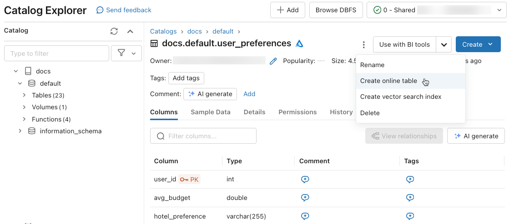
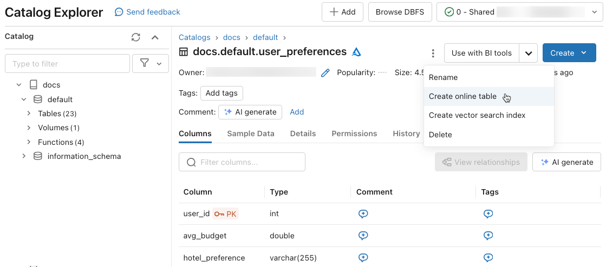
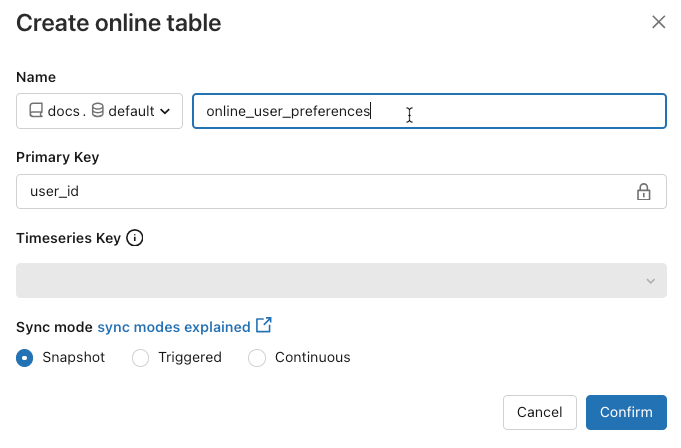

Use online tables for real-time feature serving
Preview
Online Tables are in public preview with limited capacity. During the limited preview, ingesting data into Online Tables consumes SQL Serverless DBUs. Final pricing for Online Tables will be made available at a future date. Please sign up here to participate in the preview.
Online Tables Preview is available in the following regions: us-east-1, us-west-2, eu-west-1, ap-southeast-2.
An online table is a read-only copy of a Delta Table that is stored in row-oriented format optimized for online access. Online Tables are fully serverless tables that auto-scale throughput capacity with the request load and provide low latency and high throughput access to data of any scale. Online Tables are designed to work with Databricks Model Serving, Feature & Function Serving, and retrieval-augmented generation (RAG) applications where they are used for fast data lookups.
Creating an online table is a one-step process. Just select the Delta Table from the Catalog Explorer and select Create online table.
Requirements
The workspace must be enabled for Unity Catalog. Follow the documentation to create a Unity Catalog Metastore, enable it in a workspace, and create a Catalog.
A Databricks admin must accept the Serverless Terms of Service in the account console.
Work with online tables
This section describes how to create and delete online tables, and how to check the status and trigger updates of online tables.
Create
You create an online table from the Catalog Explorer. For information about required permissions, see User permissions.
To create an online table, the source Delta table must have a primary key. If the Delta table you want to use does not have a primary key, create one by following these instructions: Use an existing Delta table in Unity Catalog as a feature table.
In Catalog Explorer, navigate to the source table that you want to sync to an online table. From the
 kebab menu, select Create online table.
kebab menu, select Create online table.Use the selectors in the dialog to configure the online table.
Name: Name to use for the online table in Unity Catalog.
Primary Key: Column(s) in the source table to use as primary key(s) in the online table.
Timeseries Key: (Optional). Column in the source table to use as timeseries key. When specified, the online table includes only the row with the latest timeseries key value for each primary key.
Sync mode: Specifies how the synchronization pipeline updates the online table. Select one of Snapshot, Triggered, or Continuous.
Policy
Description
Snapshot
The pipeline runs once to take a snapshot of the source table and copy it to the online table. Subsequent changes to the source table are automatically reflected in the online table by taking a new snapshot of the source and creating a new copy. The content of the online table is updated atomically.
Triggered
The pipeline runs once to create an initial snapshot copy of the source table in the online table. Unlike the Snapshot sync mode, when the online table is refreshed, only changes since the last pipeline execution are retrieved and applied to the online table. The incremental refresh can be manually triggered or automatically triggered according to a schedule.
Continuous
The pipeline runs continuously. Subsequent changes to the source table are incrementally applied to the online table in real time streaming mode. No manual refresh is necessary.
Note
To support Triggered or Continuous sync mode, the source table must have Change data feed enabled.
When you are done, click Confirm. The online table page appears.
The new online table is created under the catalog, schema, and name specified in the creation dialog. In Catalog Explorer, the online table is indicated by .
Check status and trigger update
To check the status of the online table, click the name of the table in the Catalog to open it. The online table page appears with the Overview tab open. The Data Ingest section shows the status of the latest update. To trigger an update, click Sync now. The Data Ingest section also includes a link to the Delta Live Tables pipeline that updates the table.
Serve online table data using a feature serving endpoint
For models and applications hosted outside of Databricks, you can create a feature serving endpoint to serve features from online tables. The endpoint makes features available at low latency using a REST API.
Create a feature spec.
When you create a feature spec, you specify the source Delta table. This allows the feature spec to be used in both offline and online scenarios. For online lookups, the serving endpoint automatically uses the online table to perform low-latency feature lookups.
The source Delta table and the online table must use the same primary key.
The feature spec can be viewed in the Function tab in Catalog Explorer.
fe = FeatureEngineeringClient() fe.create_feature_spec( name="catalog.default.user_preferences_spec", features=[ FeatureLookup( table_name="user_preferences", lookup_key="user_id" ) ] )
Create a feature serving endpoint.
This step assumes that you have created an online table named
user_preferences_online_tablethat synchonizes data from the Delta tableuser_preferences. Use the feature spec to create a feature serving endpoint. The endpoint makes data available through a REST API using the associated online table.Note
The user who performs this operation must be the owner of both the offline table and online table.
fe.create_feature_serving_endpoint( name = "user-preferences", config=EndpointCoreConfig( served_entities=ServedEntity( feature_spec_name="catalog.default.user_preferences_spec", workload_size="Small", scale_to_zero_enabled=True) ) )
Get data from the feature serving endpoint.
To access the API endpoint, send an HTTP GET request to the endpoint URL. The example shows how to do this using Python APIs. For other languages and tools, see Feature & Function Serving.
url = "https://{workspace_url}/serving-endpoints/user-preferences/invocations" databricks_token = mlflow.utils.databricks_utils.get_databricks_host_creds().token headers = {'Authorization': f'Bearer {databricks_token}', 'Content-Type': 'application/json'} data = { "dataframe_records": [{"user_id": user_id}] } data_json = json.dumps(data, allow_nan=True) response = requests.request(method='POST', headers=headers, url=url, data=data_json) if response.status_code != 200: raise Exception(f'Request failed with status {response.status_code}, {response.text}') print(response.json()['outputs'][0]['hotel_preference'])
Use online tables with RAG applications
RAG applications are a common use case for online tables. You create an online table for the structured data that the RAG application needs and host it on a feature serving endpoint. The RAG application uses the feature serving endpoint to look up relevant data from the online table.
The typical steps are as follows:
Create a feature serving endpoint.
Create a LangChainTool that uses the endpoint to look up relevant data.
Use the tool in the LangChain agent to retrieve relevant data.
Create a model serving endpoint to host the LangChain application.
For step-by-step instructions, see the following example notebook.
Notebook examples
The following notebook illustrates how to publish features to online tables for real-time serving and automated feature lookup.
The following notebook illustrates how to use Databricks online tables and feature serving endpoints for retrieval augmented generation (RAG) applications.
Use online tables with Databricks Model Serving
You can use online tables to look up features for Databricks Model Serving. When you sync a feature table to an online table, models trained using features from that feature table automatically look up feature values from the online table during inference. No additional configuration is required.
Use a
FeatureLookupto train the model.For model training, use features from the offline feature table in the model training set, as shown in the following example:
training_set = fe.create_training_set( df=id_rt_feature_labels, label='quality', feature_lookups=[ FeatureLookup( table_name="user_preferences", lookup_key="user_id" ) ], exclude_columns=['user_id'], )
Serve the model with Databricks Model Serving. The model automatically looks up features from the online table. See Automatic feature lookup with MLflow models on Databricks for details.
User permissions
You must have the following permissions to create an online table:
SELECTprivilege on the source table.USE_CATALOGprivilege on the destination catalog.USE_SCHEMAandCREATE_TABLEprivilege on the destination schema.
To manage the data synchronization pipeline of an online table, you must either be the owner of the online table or be granted the REFRESH privilege on the online table. Users who do not have USE_CATALOG and USE_SCHEMA privileges on the catalog will not see the online table in Catalog Explorer.
The Unity Catalog metastore must have Privilege Model Version 1.0.
Endpoint permission model
A unique system service principal is automatically created for a feature serving or model serving endpoint with limited permissions required to query data and execute functions. This service principal allows endpoints to access data and function resources independently of the user who created the resource and ensures that the endpoint can continue to function if the creator leaves the workspace.
The lifetime of this system service principal is the lifetime of the endpoint. Audit logs may indicate system generated records for the owner of the Unity Catalog catalog granting necessary privileges to this system service principal.
For general information about managing production environments, see Recommendations for production serving endpoints.
Limitations
Only one online table is supported per source table.
Columns of data types ARRAY, MAP, or STRUCT cannot be used as primary keys in the online table.
If a column is used as a primary key in the online table, all rows in the source table where the column contains null values are ignored.
Foreign, system, and internal tables are not supported as source tables.
Source tables without Delta change data feed enabled support only the Snapshot sync mode.
Delta Sharing tables are only supported in the Snapshot sync mode.
Catalog, schema, and table names of the online table can only contain alphanumeric characters and underscores, and must not start with numbers. Dashes (
-) are not allowed.Columns of String type are limited to 64KB length.
The maximum size of the row is 2MB.
The maximum size of an online table during gated public preview is 200GB uncompressed user data.
The combined size of all online tables in a Unity Catalog metastore during gated public preview is 1TB uncompressed user data.
Troubleshooting
“Create online table” does not appear in Catalog Explorer.
The cause is usually that the table you are trying to sync from (the source table) is not a supported type. Make sure the source table’s Securable Kind (shown in the Catalog Explorer Details tab) is one of the supported options below:
TABLE_EXTERNALTABLE_DELTATABLE_DELTA_EXTERNALTABLE_DELTASHARINGTABLE_DELTASHARING_MUTABLETABLE_STREAMING_LIVE_TABLETABLE_STANDARDTABLE_FEATURE_STORETABLE_FEATURE_STORE_EXTERNALTABLE_VIEWTABLE_VIEW_DELTASHARINGTABLE_MATERIALIZED_VIEW
I cannot select either “Triggered” or “Continuous” sync modes when creating an online table.
This happens if the source table does not have Delta change data feed enabled or if it is a View or Materialized View. To use the Incremental sync mode, either enable change data feed on the source table, or use a non-view table.